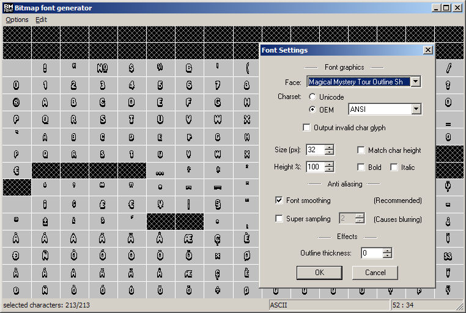
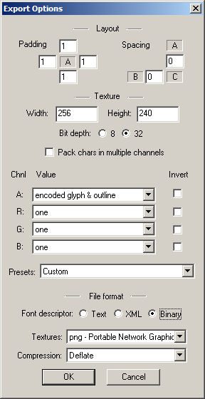
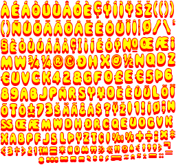

1. Grab a nice font & Install it
Tree House is a good free site: http://www.thfonts.com/
1001 Free Fonts is another : http://www.1001freefonts.com/
Eg. http://www.thfonts.com/magical-mystery-tour-outline/
-> MAGIMTOS.ttf
To install the font, I advise you use Windows Explorer to
browse to C:\windows\fonts ...Then use File->Install, because
1) Other methods fail randomly and
2) You get to see a Windows_v3.1 dialog box :)
2. Download and install the latest BMF generator from AngelCode
http://www.angelcode.com/products/bmfont/
3. Use the BMF Generator construct a basic font
3a. Select Font

3b. Select output options
# If you plan to edit the font after it is rendered I advise that you set
Padding to 1 all round and both Spacing options to 0
The font-image will be a bit bigger, but much esier to edit
# If you plan to edit the font after it is rendered I advise that you set
Padding to 0 all round and both Spacing options to 0
The font image will be as small as possible
# The Width and Height MUST be multiples of 4 (when coding for the Wii)
# The Bit Depth MUST be a 32
# Do NOT "Pack characters to multiple channels"
# Alpha="Glyph+Outline" and RGB="one" is a good place to start
# The Font Descriptor MUST be binary
# The Texture MUST be PNG

3c. Save the font
Two files will be created, the PNG Image and the Index Table
You choose the name of the Index Table ...Ie. mmt.fnt
The image will be called something like: mmt_0.png
3d. NOTES:
# The _0 is the page number, in case the font spans multiple pages
# Font pages is generally not required with Western fonts
# Font pages is almost certainly required for Eastern fonts
# The WiiFont library may well have multi-page fonts support by the time
you read this. But as I write this, only one font page is supported.

4. Polish your font
You may like to load your font in to Gimp (or such) and make it colouful
DO NOT move any characters
DO NOT make any character larger
If you make a character smaller, the outcome might not be what you expected,
but it won't break anything.

...In this example I have simple changed the white to red and put a yellow
blob behind each character to fill the internal gaps - let your imagination
be your guide [I imagined a fast, small, flexible, working font system that
supports coloured/colourful animated fonts written in well-commented 'C'
...you should imagine an impressive font]
5. Using the demo code and the comments in bmf.h, add text to your
game/application
I /do/ plan to write a FM to R, and when I do I will advise you to RTFM, but
for now TFM is not written, so I won't tell you to R it ;)
|